Exploratory Data Analysis of Colorectal Cancer Data
This notebook presents an exploratory data analysis (EDA) of a colorectal cancer dataset. The objective is to examine demographic and clinical patterns in age distributions, Dukes cancer stages, and survival after treatment of colorectal cancer
Dataset Description
The dataset used in this analysis was obtained from Kaggle and contains de-identified clinical records of colorectal cancer patients. Each row represents an individual patient, with demographic information, disease staging, treatment indicators, and disease-free survival outcomes.
Variables
- ID_REF: Unique patient/sample identifier
- Age (in years): Patient age at diagnosis
- Dukes Stage: Clinical staging of colorectal cancer (A–D)
- Gender: Patient gender
- Location: Tumor location (e.g., left-sided)
- DFS (in months): Disease-free survival time measured in months
- DFS event: Indicator of disease recurrence or event (1 = event occurred, 0 = censored)
- Adj_Radio: Indicator for adjuvant radiotherapy (1 = yes, 0 = no)
- Adj_Chem: Indicator for adjuvant chemotherapy (1 = yes, 0 = no)
The dataset is publicly available and anonymized, making it suitable for educational and exploratory data analysis purposes.
Libraries and Environment Setup
This section imports the Python libraries required for data manipulation, analysis, and visualization.
Data Loading and Cleaning
The colorectal cancer dataset is loaded into a Pandas DataFrame for analysis.
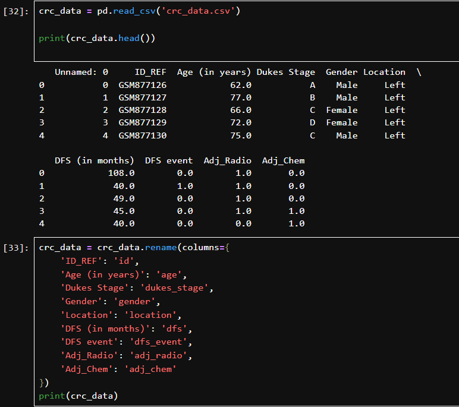
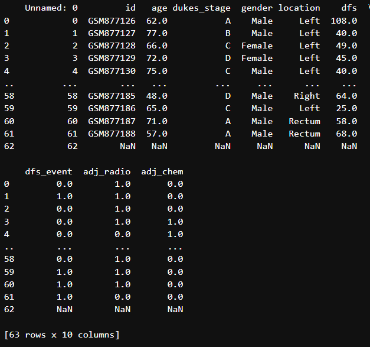
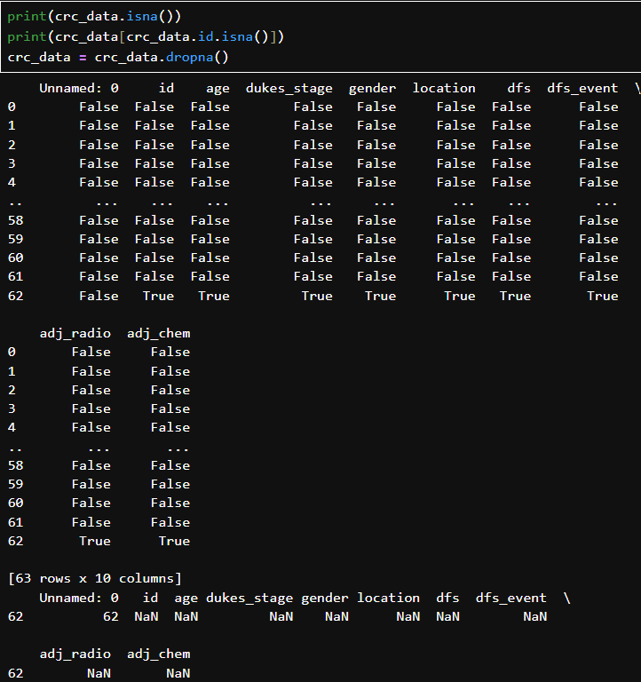
Initial Data Exploration
Initial exploration is performed to understand the structure, variables, and basic characteristics of the dataset.
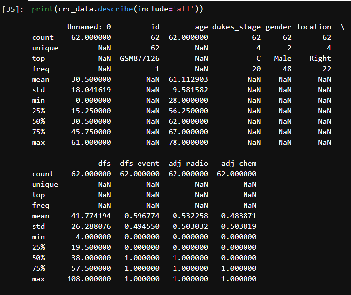
Exploratory Analysis: Age Distribution
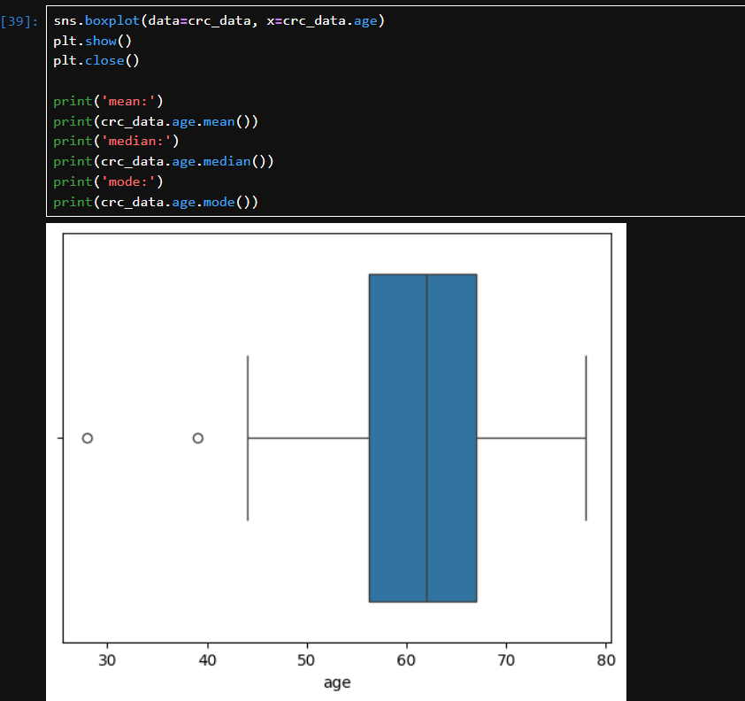
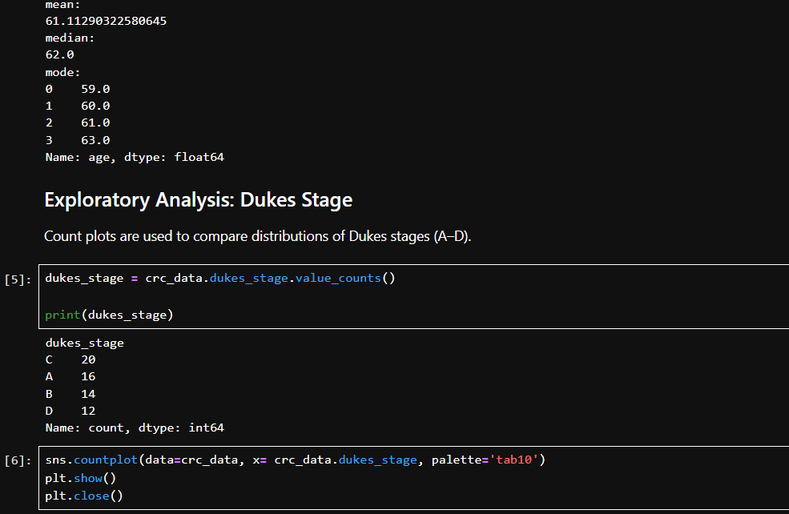
Exploratory Analysis: Dukes Stage
Count plots are used to compare distributions of Dukes stages (A–D).
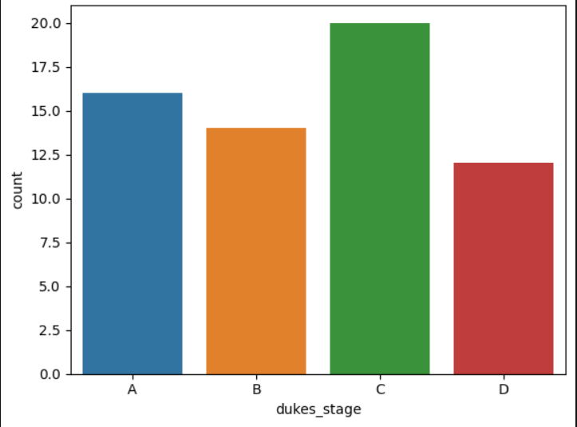
Age Distribution by Dukes Stage
Boxplots and overlapping histograms are used to compare age distributions across Dukes stages (A–D). Density normalization enables meaningful comparison between groups of different sizes.
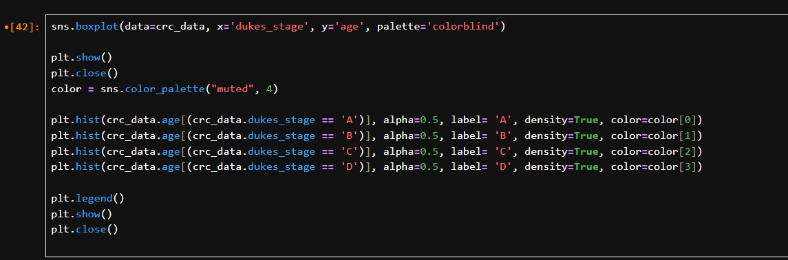
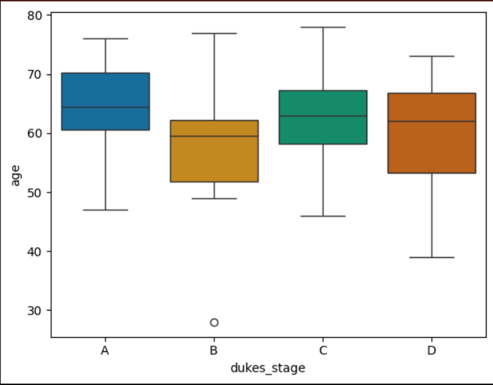
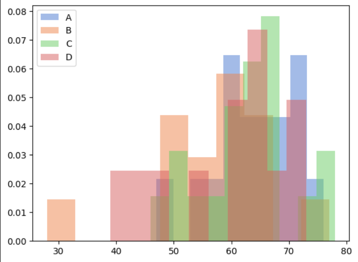
Exploratory Analysis: Demographic Stratification
Age by Gender and location of tumor
Grouped aggregations are used to compare mean age across gender andn location categories.
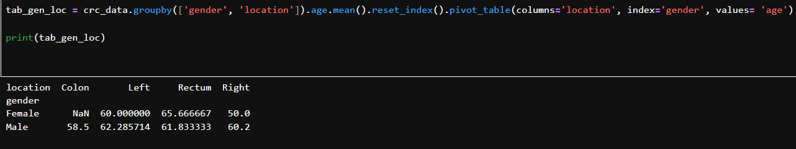
Distribution by Gender and Location of tumor
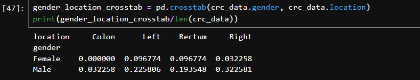
Exploratory Analysis of Survival Duration of Patients
Survival analysis based on treatment options
Boxplots show survival length of patients based on treatment types: chemotherapy and radiotherapy with 0.0 representing chemotherapy and 1.0 representing radiotherapy
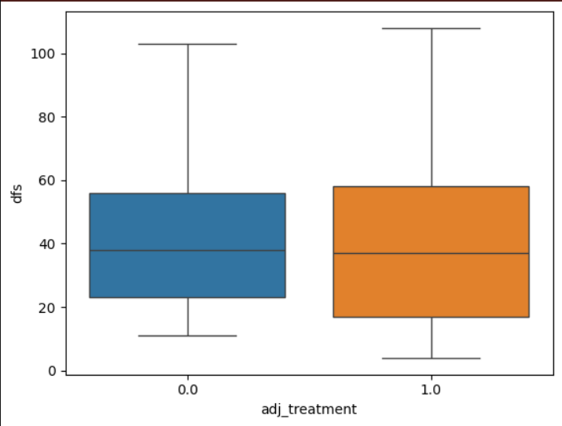
Survival analysis based on age
Scatter plot showing correlation between age and survival duration after treatment.
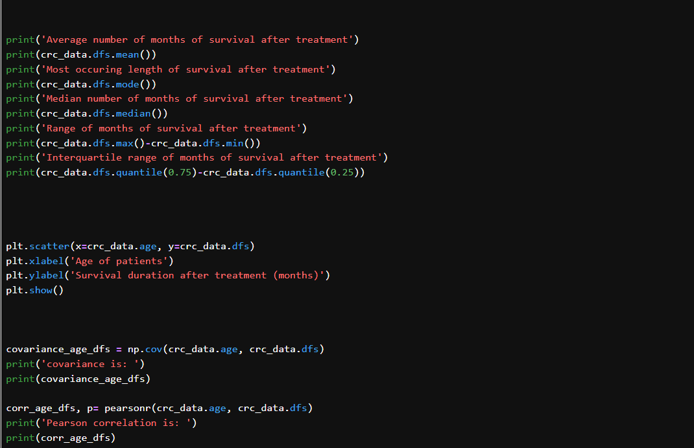
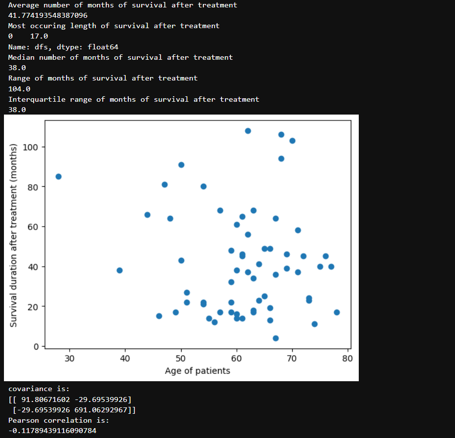
Key Observations
- B stage cancer fell below the median for the experimental dataset. B stage cancer may be associated with the age of the dataset
- Data shows overlapping data values of both treatment types (chemotherapy and radiotherapy). The similarity of boxplots for both data set shows there is generally no corelation between treatment type and survival.
- There is weak negative correlation between age and survival after treatment
- The data shows that relatively older females (65yrs) frequently have tumors located in their rectum
- There was no female having colon cancer type for this dataset
- The above indicates that higher proportion of men usually have cancer in all locations compared to females
Limitations
This exploratory analysis is subject to limitations related to sample size, variable availability, and lack of outcome data.
Reproducibility
All analysis was conducted in a Jupyter Notebook using Python and is designed to be reproducible and extensible.